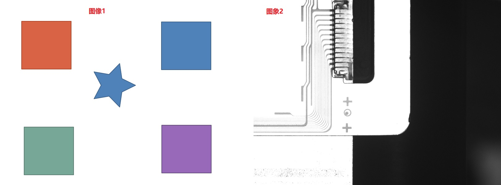

将多幅图像整合为一幅图像，保存到指定路径，一般与屏幕截图工具配合使用。其实际应用效果如图1所示。

| 分类 | 参数名称 | 参数描述 |
|---|---|---|
| 属性窗口 | 拼合图像个数 | 输入待拼合图像的个数，取值范围2-16。 |
| 列图像个数 | 输入拼合后图像的列数，取值范围1-16。 | |
| 行图像个数 | 输入拼合后图像的行数，取值范围1-16。 | |
| 列间距尺寸 | 输入拼合后图像列之间的间距，默认值为20。 | |
| 行间距尺寸 | 输入拼合后图像列之间的间距，默认值为20。 | |
| 自动命名 | 控制保存图像的名称是否采用自动命名格式。 | |
| 覆盖保存 | 自动名选择“否”，文件名参数不为空时，是否覆盖同名文件保存。 | |
| 尺寸基准模式 | 图像组间的图像尺寸处理方式包含第一幅图像、第一幅图像的宽、第一幅图像的高、尺寸最大、尺寸最小。 | |
| 文件格式 | 支持输入的文件格式包含自动、JPG、BMP、PNG。 | |
| 输出文件路径 | 输入保存图像的路径。 | |
| 图像窗口 | 输入图像 | 显示待拼合图像的其中一幅图像。 |
| 数据链 | 输入图像 | 待拼合图像，最多可以为16幅。 |
| 文件名 | 保存图像的自动命名参数选择为“否”时，链入该参数，输入保存文件的名称。 | |
| 高级界面 | 无 | 无 |
| 分类 | 参数名称 | 参数描述 |
|---|---|---|
| 监视窗口 | 执行结果 | 工具执行结果。 |
| 执行时间 | 工具执行时间。 | |
| 图像窗口 | 无 | 无 |
| 数据链 | 无 | 无 |
无
无
参见“\Samples\多图拼合保存工具.gvp”。